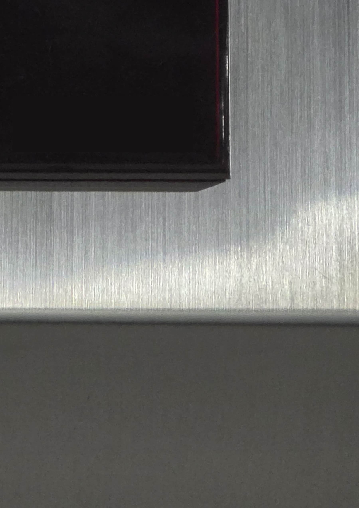
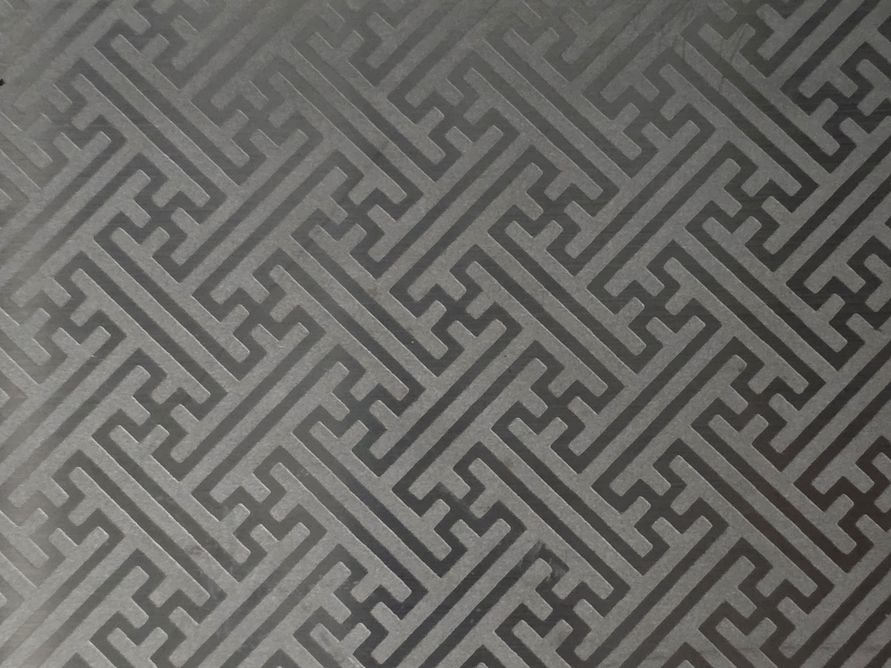
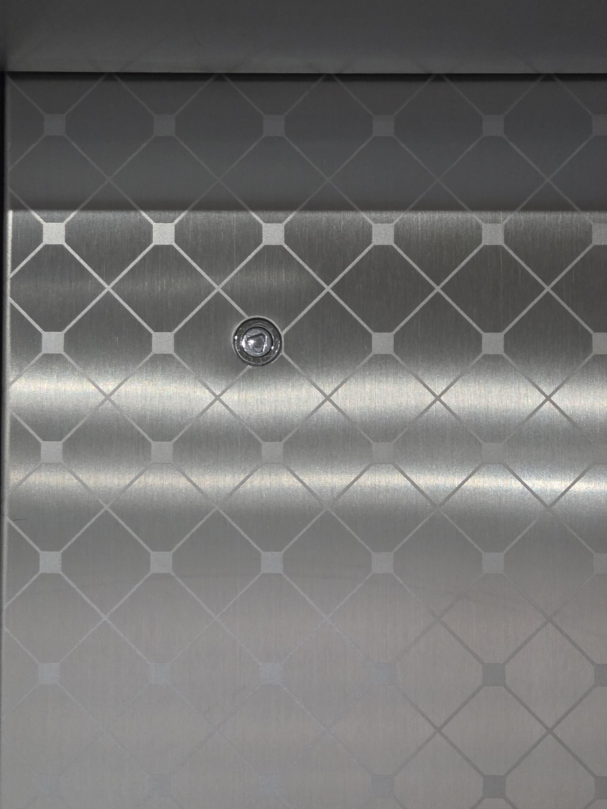
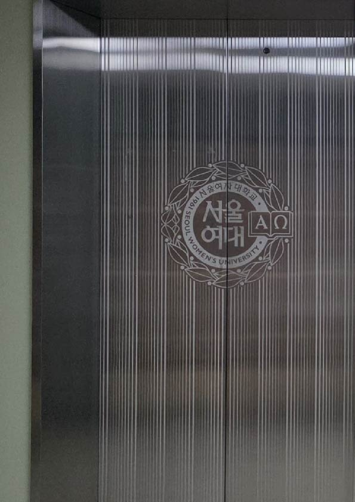

엘리베이터는 왜 스테인리스 재질인가?
과거 엘리베이터는 목재로 제작되었으나, 현재는 스테인리스 재질이 보편화되었다. 이러한 변화는 1920년대 시작되어 1950년에서 1960년대 사이에 일반화되었다. 주요 원인은 고층 건물 증가에 따른 안전성 요구 증대이다. 내구성 및 유지 관리 용이성 또한 스테인리스강 사용의 지속 요인이다. 주로 사용되는 재질은 STS 304와 STS 316 스테인리스강이며, 내식성이 강하여 선택되었다.
엘리베이터의 스테인리스 결은 왜 세로인가?
엘리베이터 벽면의 스테인리스강 결은 세로 방향이다. 이는 일관된 질감 및 마감 품질 유지를 위한 제조 효율성 및 일관성 때문으로 설명된다. 또한 세로 방향의 결은 공간을 더 높게 보이게 하는 심리적 효과를 유발한다. 엘리베이터 제조사 가이드라인에서도 세로 브러시 방향이 공간에 높이감을 강조할 수 있다고 명시된다. 상하 이동 및 공간감이 중요한 엘리베이터에서 세로 브러시는 벽/패널을 깔끔하고 높게 보이게 하는 시각적 효과를 제공한다.
  엘리베이터마다 무늬가 왜 다른가?
엘리베이터 재질은 스테인리스강으로 통일되었으나, 표면 무늬는 다양성을 나타낸다. 예를 들어, 특정 학교의 건물별 엘리베이터 재질은 다음과 같다: 기념관은 큰 마름모와 작은 마름모로 구성된 격자 모양, 인성교육관은 굵고 얇은 선들의 반복 그래픽 형태, 조형예술관은 한국적인 선 그래픽 모양. 무늬를 추가하는 주된 이유는 오염, 지문, 스크래치 등을 은폐하기 위함이다. 무늬는 공간의 정체성을 나타내는 역할을 하기도 하며, 폐쇄적 공간에서 탑승자가 안정감을 느끼도록 관여하기도 한다.